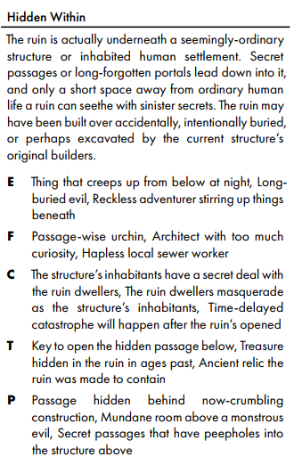
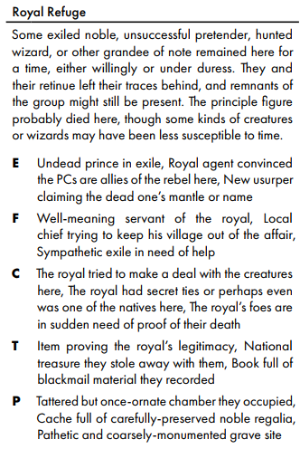

Hex: 319.215 Adv: Dragon Barrow Adv
Overview
An overgrown old temple in the wilderness. Underneath it it’s hidden the real catacomb. It’s an ancient burying place for the heroes of the battle of Ancient Battlefield against the green dragon Azdraka and its army. Here they keep the Dragon Slayer Longsword. A +2 Longsword with 3d6 slashing damage extra against dragon types.
Her body has been recently reanimated by the waves and has spent all the time laying traps and controlling other bodies in the tomb. She wants her body returned to normal or destroyed.
Temple
On arrival:
Nestled in a forested area near the border of the battlefield, you found a weathered stone building with some columns on the side and an elevated platform.
In its center there is a big statue holding 2 marble plates of great dimension. The libra is unbalanced at the moment. Everywhere, vines are growing and moss is covering a good part of the statue. A damp smell of humidity can be felt. Behind the statue, from a small crease in the floor, you can see that the some sort of stair continues under it.
The statue is the key, they need to prove that they share the same values of rightousness and protection against dragons as the Lady.
On the statue an inscription says: “This temple celebrates the life and death of Lady Masah Dankhud, Lady of Neverwinter and anathema to Azdraka the green dragon and his army of beasts. To meet her, stand on the plate and make her proud.”
They can either state their intentions, talk about the dragon or show a feat of strength against wild beasts.
The libra can also be destroyed. This will worsen all disposition of inhabitants. - Staff of secrets will display an entrance under it. - Detect Magic will also show the libra as magical.
If they waste time or say something offensive, 2 Elder Lizards will emerge from outside and attack. Once defeated, the statue will trigger. - https://5e.tools/bestiary.html#elder%20giant%20lizard_tftyp x2 - Giant SkeletonUndead7TftYP
Catacombs
On arrival:
Upon descending the stairs, you found yourselves in a long corridor with entrances on both sides. The air is heavy and smell of humidity and decay fills your nose. Some water drips from above making the only noise you can hear. The only source of light is the outside behind you, which illuminates only the first few meters of the corridor. On the first entrance on your left, a sound of fighting can be heard.
General Features
Humid stone floor. Ceiling with roots sticking between the stones and hanging down. No lights, foul stench and heavy air.
All stairs are blocked by debris. Requires a strength check DC 13 or 1 hour of work to open. The stairs in the temple are permanently blocked.
Rooms
- Combat ongoing. A small shrine pierces one wall. A low altar, covered in mouldering offerings, burnt-down candles and the like, fills much of the niche. Faded paintings of an idealised afterlife of a winged woman in heavy armor, fighting a green dragon, adorn the niche’s walls.
- A group of skeletons and specters are fighting each other, but none seems to be doing damage to the other. They are completely absorbed by the fight and don’t notice you. What do you do?
- Empty room with some sarcophagi in it. “Upon entering, the group will hear the voice of a woman calling from room 4.”. On the tombs, the names of various “Champions of the Lady” are written. All tombs have been opened and are empty inside.
- Bloodstains are all over the place, all dried up. Traces of burnt wood are in the center. Seems like here was a camp. No other traces of camp are there. A zombie is standing on the burnt remains, has a cowbell hanging from his neck. Stealth check DC 12 if entering normally.
- Trap: A simple zombie has a cowbell attached to it. If it is alerted, the movement will call monsters from room 6. coming through the door.
- If wraith is friendly, the zombie attacks normally, the wraith will help uselessly.
- Room of Banshee Lady Masah. She will ask for help to the PCs. She is protected by a guardian if attacked.
- She will explain that the buried here were brought back by magical waves, that keep them anchored to this world. She and other buried here have been awakened separated from their bodies, which have risen again under an independent will. No matter what, they can’t damage each other and are locked in an endless battle.
- She will speak about a treasure as a reward for the destruction of her body.
- She reccomends aquiring the Dragon Slayer Sword before going there. But they will need to be worthy of it.
- “Upon entering you see what was probably a storage room of sorts. Barrels and crates fill the room, many broken by rotten wood.”
- Trick. Hazard. Crumbling ceiling. Perception DC 13 to notice.
- If noticed, “The ceiling here is weak and with roots coming out.” Pulling the roots or damaging it will open a path to surface.
- On fail: 2d10 damange and exit uncovered.
- Access to R3 is barred by a closed door.
- A wraith is there. Will be hostile if the group is not friendly to the Lady or not met her yet.
- Scriptorium of Recalling. An old library where the story of the battle is described. It mentions that the body of Lady Masah has been buried with the remains of the green dragon at the end of the long corridor, with the Dragon Slayer Sword and the Wand of Antigravity Room near there.
- Pressure plate when entering the room (Perception DC 12). Portcullis drops and the room fills with eye-irritating gas. Constitution ST DC 13 or blind for 1 hour. Investigation DC 14 to see tripping wire, if searched
- “Room has a small desk and some broken benches all around. Looks like some kind of social area, given the presence of old bottles, cups and small barrels for beer. Most of it is now dusty and ”
- Among the broken things, 3x Greater Healing Potions,
- Portcullis can be kept open without issues later.
- Investigation result: After investigating the trap, it can be seen as something made with scraps findable in the area, mostly rotten wood and stone pieces crudely reshaped. The system
- “Room has a small desk and some broken benches all around. Looks like some kind of social area, given the presence of old bottles, cups and small barrels for beer. Most of it is now dusty and ”
- Sarcophagus with another Champion. In the room there are some other undeads. Champion is wearing a good quality Sigil of Neverwinter, made of silver. Rest of armor is damaged by time. 100 gp
- Small chamber with a crown shaped altar dedicated to Aluvahin religion. “Let the blessing of To’kar be upon you”
- If prayed upon, the altar will give immunity to 1 breadth attack.
- Big landmark. The Strange Rock Cube.
- On entrance “A big rock cube is hovering in place and slowing rotating on its axis. Inside it is a small wand and seems to contain an Axe of very good manufacturing. Some other objects around are also caught in the antigravity field. A yellow energy fills the room and some spectral life-sized images show the last moments of the battle. A figure next to the Lady has this wand in the hand pointed at some adversaries nearby, which are floating in mid-air, incapable of reaching them.”
- The object is hard to reach and repels all creatures approaching it at less than 15ft. Objects can get near without issues. Mage Hand gets overcharged by the energy and fails.
- Inside is the Wand of Gravity Removal. A wand that suspends gravity in 30ft radius, range of 60ft. No inversion, you can push people like in microgravity, 8 charges in total are still inside. At 0, it loses its power. Each use lasts 10 minutes.
- An armor infused with a soul that can talk, called Hiedeh. The room has some alcoves on the side and some smashed wooden forniture. He has some cowbells, small bells and the rest around his belt, clinking while moving.
- Wants the soul of the Lady to help the Body. Motivation: Jelous in life of her, wants to see her damned
- If helped, will give informations on how to control the green dragon (false), using the Wand of Gravity Removal. Will give a small clear crystal where to store her soul.
- If refused, it will attack. Maybe a golem made of objects in the room with the weapons and armors as the core. Component based creature that reforms each round and must be destroyed to reach the core and destroy it. CR 7 stats
- AC 15, HP 120, Atk +7, Dmg 40, DC 14, Save 6
- Current:
- Armor 60 HP
- Arms, Sword attacks, 20 HP + 20 HP
- Chest Cannon, Hidden until first use, 10 HP. 30 ft line radiant energi, 2d10, Charge 5-6
- Hearth, Critical, Hidden, 10 HP
- AC 15, HP 120, Atk +7, Dmg 40, DC 14, Save 6
- The helmet is richly decorated and has a value of around 500gp. It still has some magical energy in it, but don’t seem to be of any usefulness.
- Body of the Lady location with green dragon.
- The Body will not talk, only wake up the dragon corpse and attack. The Body has a fixed maniac smile on her.
- 3000 gp, Sword of Dragon Slayer on Body.
- ROOM DESCRTIPTION: On the walls around the room, old paintings show the dragon sleeping in its lair, surrounded by gold. A text in Common in the lower part, near the treasure, says: “A reminder of the immense treasure of the dragon, most of which was used to help the City of Neverwinter repair the damages received.”
- Dragon Stats (210 HP)
- Description: “The dragon skeleton wakes up, its empty orbits looking at you. He is covered in a slimy substance that is all over the body of the dragon corpse, filling the places where flesh and scales once were as you look. A strong necrotic aura emanates from his body, the body of the lady repairing at the same time. The green substance slows its enveloping around the skeleton, taking the shape of green, shiny scales. His arms have big claws, dripping in poison”
- COMPONENTS
Necromantic aura (heals at start of each turn all undeads + dragon 1d4 HD/ (1d4)d8 HP) (Dispelled by 40 radiant/fire energy or 80 HP for the rest. Healed by necrotic damage.) 13 fire / 13- ~~Scale armor layer (hidden, revealed on first hit after aura) (50 HP)
- Arms (
10/10 HP, Melee with poison damage) Tail (10 HP, 10 ft AOE Melee, Dex save DC 15 or prone)- Jaw (20 HP, Melee)
Breadth weapon (hidden) (10 HP, AoE Poison Cone 30 ft) 26 force- Hearth (Lifeblood, hidden) (10 HP) Discovered after slashing throat.
- Arms (
- ~~Scale armor layer (hidden, revealed on first hit after aura) (50 HP)
- Architectural trick. Force field, perform or bring sacrifice to activate, On activation closes the entrance for 8 hours, forcing a long rest and restocking some of the rooms.
- In the Room of the Weary Traveler, an altar of a exhausted man is resting near his sword. “Do you longe for rest, O traveler?” If one says yes, a force field will activated, blocking the exit for 8 hours. After that, some rooms will be restocked.
- Copper Decapitated Statue. Conferring knighthood. Both the Lady and the Knight have been beheaded. On the walls, a list of names are carved, “Honoring the City and the Lady”.
- Some specters are there, hostile if hostile with Lady.
- Special Room. Written records. Content: Instructions on how to kill a dragon. It’s elemental resistance to poison, the breath weapon (poison 30 foot cone). Records of broken wing after the battle.
Notes
TODO:
- Create more traps in the overgrown temple building. Both normal traps, some ingenious ones and some triggers that attract nearby beasts if triggered.
- Trap 1: Prison/Unleash. If triggered, imprisons who triggered it and does minor damage. skill check to free it. More of a gotcha than a real danger.
- Trap 2: Horrible Stab. Classic spear trap.
- Trap 3: Suppress Balance. Imbue Enemies. In a combat encounter place, if triggered give some buff to enemies. Maybe some normal zombies become exploding ones when killed in a 5ft radius.
- Exploration encounter: Useful Armosphere. Roughly Fancy. A room where the sword is. If they try to take it, the body of the lady attacks.
- Catacombs:
- There are 2 factions: Spirits vs Undeads. Spirits are some of the companions of the Lady, the undeads are their bodies reanimated by Cryovain. They can’t hurt each other, so are in a perpetual war, dividing the catacombs in 2 sections.
- TODO: make a version of each companion and decline powers in spirit and undead forms. Most of the dangers of the place are traps + eventual enemies they make.
- Introduce faction war in the first room on the left “Monsters”. They are fighting each other, door is open. No damage is being dealt. They can intervene and choose a side or continue there. There will be no hostility at the beginning, all undeads and spirits are in good mind conditions.
- There are 2 factions: Spirits vs Undeads. Spirits are some of the companions of the Lady, the undeads are their bodies reanimated by Cryovain. They can’t hurt each other, so are in a perpetual war, dividing the catacombs in 2 sections.
One roll results
How Old is it? Generations old. 100 yo What do the locals think of it? They misunderstand what it really is They only know about the surface temple. How did it become ruined? Abandoned when it became useless Increasing attacks from wilderness and forest let it become untenable to keep it safe without people living nearby. Why not plundered yet? True entrance is unknown Lady Masah wanted for the catacomb to be hidden, to avoid the sword being plundered by tomb raiders. Which kind of ruin? Catacomb Who used the ruin before? A garrison of local troops. For a period a garrison from Neverwinter was keeping it safe from beasts, but was abandoned due to the remoteness from inhabited zones, which rendered it also not much frequented. They were suddenly all killed one day 5 years ago, leaving the bodies all around the temple, which got people to avoid it.
Ruin Tags Hidden Within p196  Royal Refuge p201 
Important NPCs
Lady Masah Dankhud
One of the Ladies of the Neverwinter Government at the time. She led a party of companions to slay the dragon. She killed it, but was mortally wounded. She asked to be buried secretly near the battle site with the Dragon Slayer Longsword, as a way to keep away looters and unworthy people. She is very angry about having her body running around, desacrated from her tomb.
The reanimated body of Lady Masah
This zombie has placed a lot of traps in the temple and catacomb, plus some attraction devices to have beasts coming if triggered. Has stats of Skeletal KnightUndead7DSotDQ Double HP, add legendary resistance 3 times. Legendary action init 20 for another Multiattack or do a Move without Attack of Opportunity.